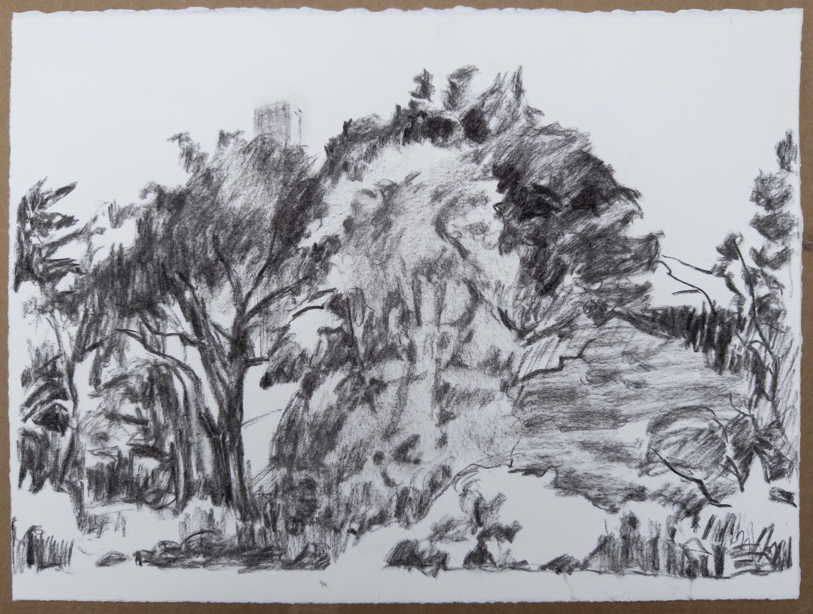

After retiring from the crush of a city job, Kelly Normand (she, her) sought a painting and drawing reclusion within Green-Wood cemetery in Brooklyn. Amid turmoil in national politics and a tragically warring world, Normand created observational paintings at Crescent Water and Lull Water in Green-Wood. In process, the paintings developed into hallucinatory landscapes that indicated a molecular dispersal. Normand was interested in getting beyond or under or above the green of the greenery of Green-Wood. The failure of human order continues in the chaos of the Trumpian conquest. Green-Wood continues as Normand’s painting retreat, while elsewhere, there is collapse.
Kelly Normand holds: